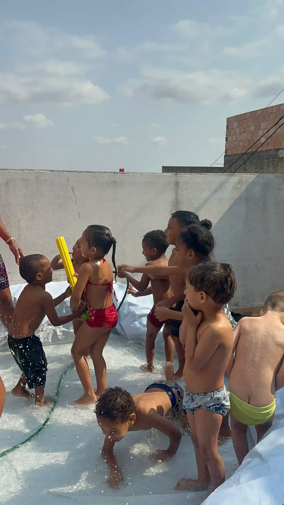
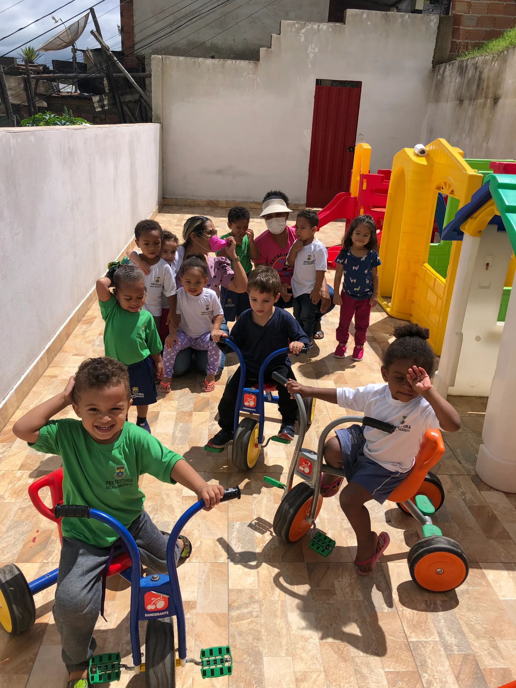
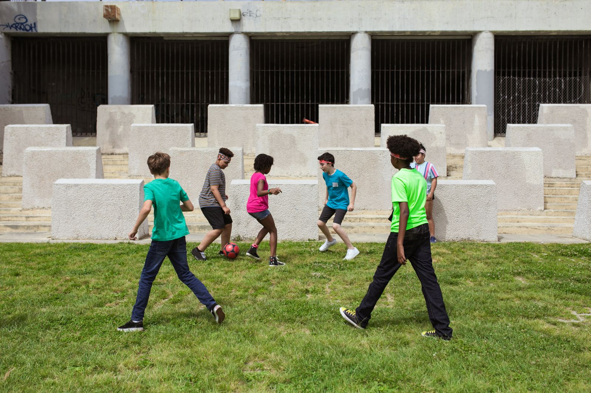
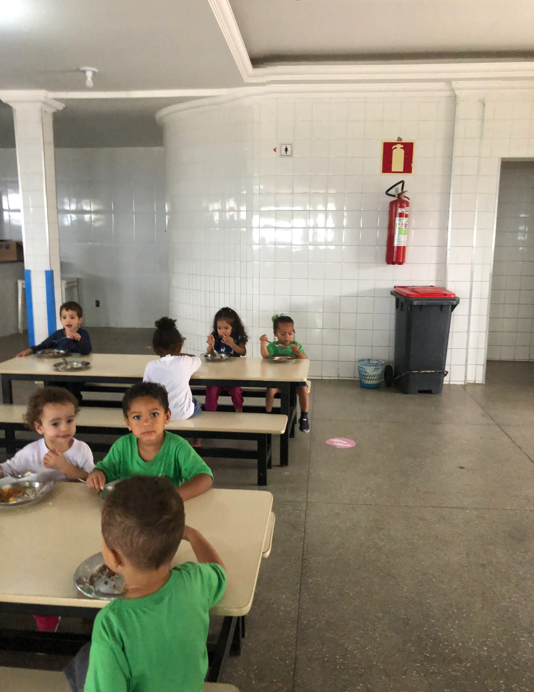
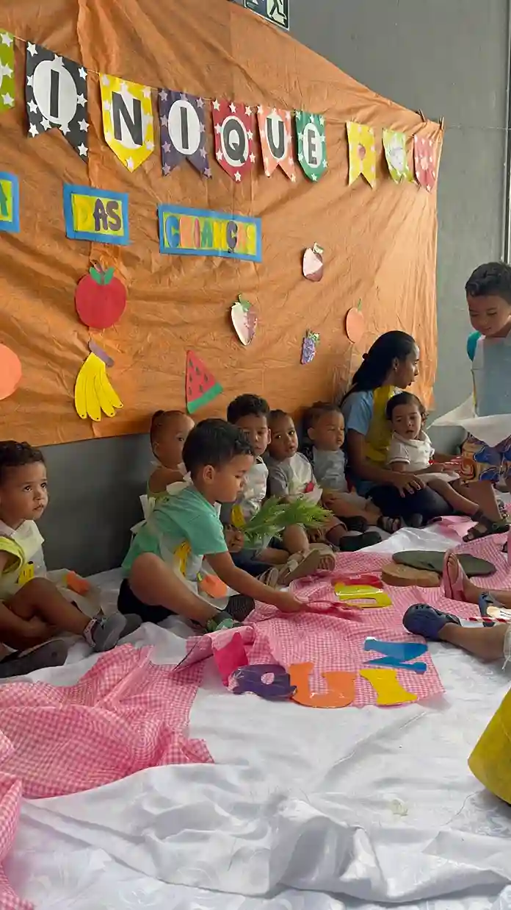
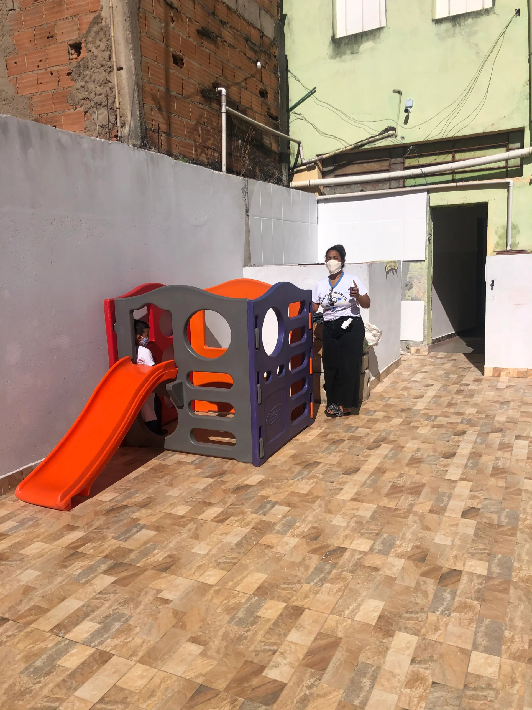

Educação

30anos
transformando
histórias
transformando
histórias
Educação · Cultura · Esporte · Assistência social
30 anos transformando
oportunidades
em futuro.
Desde 1996, educação, cultura, esporte e proteção social trabalham juntos para fortalecer crianças, jovens e famílias no Taquaril, em Belo Horizonte.

1996O começo de uma história
que continua crescendo
que continua crescendo
Conheça a Rede ASAS
Há 30 anos, cuidamos de pessoas por inteiro.
A Rede ASAS Brasil nasceu da Associação Shekinah de Assistência Social com uma convicção simples e poderosa: toda pessoa merece ser acolhida, respeitada e preparada para construir o próprio futuro.
Hoje, educação infantil, formação comunitária, esporte, cultura, tecnologia e apoio familiar trabalham juntos para gerar transformação duradoura.
Nossa história, missão e valores →O que fazemos
Projetos que acompanham cada fase da vida.
Educação
Aprender abre caminhos.
Centro Infantil, Faculdade Comunitária, biblioteca e inclusão digital.
Conheça →
Esporte
Valores para a vida.
Judô, futebol, vôlei, disciplina e trabalho em equipe.
Conheça →
Cultura e tecnologia
Talento precisa de espaço.
Música, mídias digitais, podcast e criatividade.
Conheça →
Famílias
Ninguém caminha sozinho.
Acolhimento, vínculos, orientação e proteção social.
Conheça →Imagens de apoio ilustrativo. Conheça os registros reais da Rede ASAS em nosso Instagram.
1996—2026
Uma história feita de presença.
Três décadas depois, o compromisso é o mesmo. O alcance é maior, os projetos se multiplicaram e o futuro pede ainda mais espaço para acolher.
Conheça nosso impacto

Rede ASAS em movimento
Histórias, encontros e realizações.
Convivência
Vínculos que fazem da comunidade uma verdadeira rede de cuidado.

Futuro
Um novo espaço para acolher mais sonhos e ampliar oportunidades.
Confiança e responsabilidade
Transparência também transforma.
Uma instituição com 30 anos de história precisa mostrar com clareza quem é, como atua e de que forma cada apoio fortalece sua missão.
Portal da Transparência
01
→02
→03
→04
→
Identidade institucional
História, missão, valores, CNPJ e canais oficiais.
Indicadores de impacto
Números que ajudam a compreender o alcance diário.
Programas e projetos
Objetivos e frentes de atuação organizados por área.
Relacionamento
Contato para doadores, empresas e voluntários.
Como ajudar
Há muitas formas de fazer parte.
Doação
Contribua com qualquer valor
Ajude a manter alimentação, materiais, atividades e estrutura.
Saiba como doar →EmpresasConstrua uma parceria
Associe sua empresa a um impacto social próximo e mensurável.
Fale com a equipe →VoluntariadoCompartilhe o que você sabe
Doe tempo, conhecimento e presença para fortalecer a comunidade.
Quero participar →VisitaConheça de perto
Agende uma visita institucional e veja como a Rede ASAS atua.
Agendar conversa →O próximo capítulo
O futuro da Rede ASAS também depende de você.
Empresas, voluntários e doadores tornam possível ampliar projetos, estrutura e oportunidades para crianças, jovens e famílias.
O próximo capítulo
Um novo espaço para ampliar o cuidado.
O projeto considera 640 m² de área construída e orçamento preliminar organizado por etapas. Conheça os documentos técnicos, os cenários de custo e as formas de apoiar a construção.